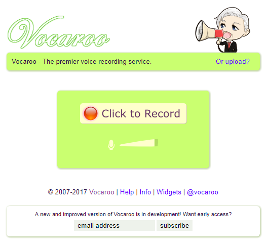
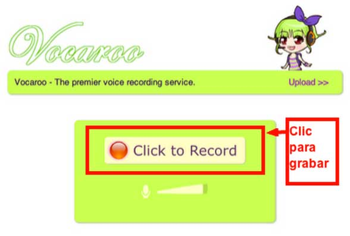
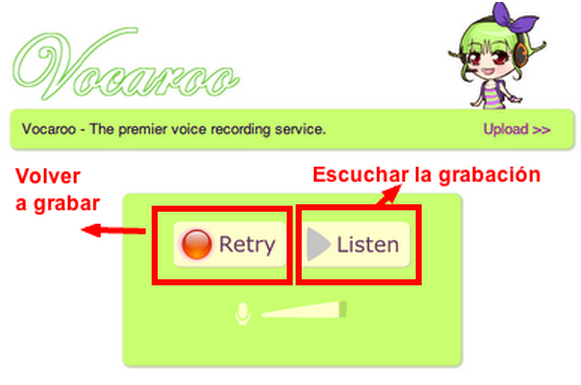
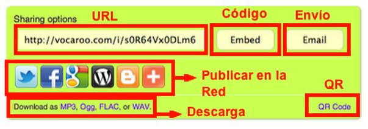
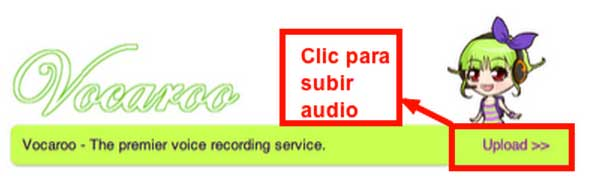
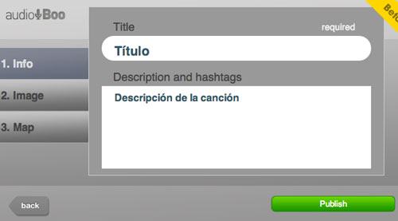
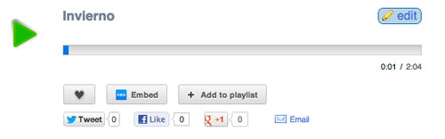
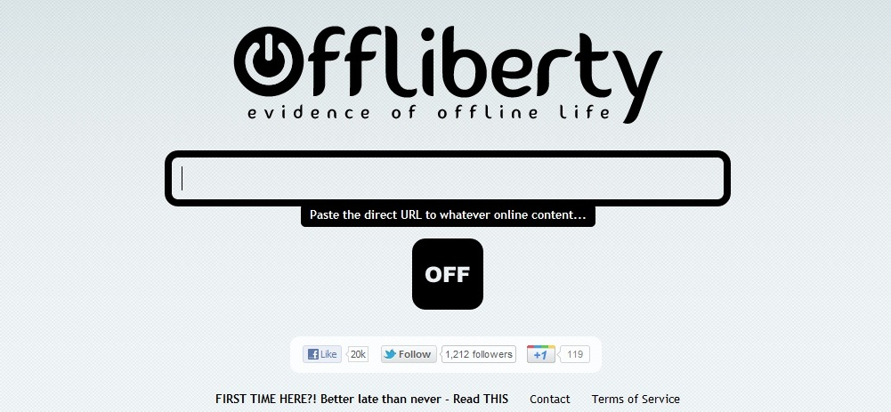
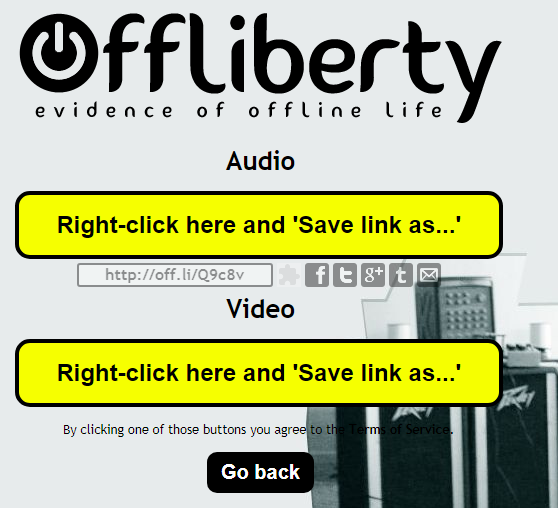

Fase inicial.En casa.
Es una hecho irrefutable en la sociedad educativa actual, el esfuerzo realizado por los docentes a la hora de progresar e innovar en el proceso de enseñanza de nuestros alumnos.
En este caso, os destaco la importancia de la MÚSICA a través de las canciones como estrategia metodológica para impartir los conocimientos acerca de la oración simple.

Sin darnos cuenta la música influye en nuestro subsconsciente de tal manera que los distintos mensajes que transmiten arraigan con fuerza en la mente de nuestros alumnos.
Y es que la "canción didáctica" aporta innumerables beneficios en el proceso de aprendizaje.
Llegado a este momento, espero haberos convencido de la importancia de la música en el desarrollo cognitivo de nuestro alumno. Y así para que vosotros también podáis contribuir en esta tarea os proporciono una serie de plataformas que podéis utilizar para confeccionar vuestras propias canciones didácticas.
VOCARO

Por un lado os presento una aplicación de carácter gratuito como Vocaroo gracias a la cual podéis grabar audios de forma online, sin necesidad de registrarse y sin límite de tiempo para, posteriormente, compartirlo en Internet o descargarlo en diferentes formatos. También ofrece la posibilidades de grabaciones que tenemos ya en nuestro ordenador, subirlos a la red.


 
En el siguiente vídeo tutorial se os señalan los pasos para poder utilizarla con éxito.
AUDIBOO
Audiboo es una herramienta 2.0 que, entre otras funcionalidades, nos ofrece la posibilidad de confeccionar y distribuir grabaciones de AUDIO, con el micrófono de vuestro ordenador, o VIDEO, entre otras, confeccionadas tanto por nosotros como docentes como por nuestro alumnado a las cuales se les pueden incluir imágenes para después compartirlo en las redes sociales o por medio de una dirección URL.
 
Os proporciono un vídeo tutorial sobre su funcionamiento.
Creo conveniente destacar que, Audiboo no os permite descargar la grabación de audio en o vídeo que hayáis creado en la propia plataforma. Sin embargo, Offliberty os permitirá descargarlo como vídeo o Mp3.
 
La profesora Carmen Rojas es consciente de la importancia que tiene la canción a la hora de transmitir contenidos didácticos. Así, mediante la adaptación de la famosa canción de ASEREJÉ del grupo musical las KETCHUP, presenta la introducción de la oración simple.
Ésta la podéis consultar en distintos formatos: